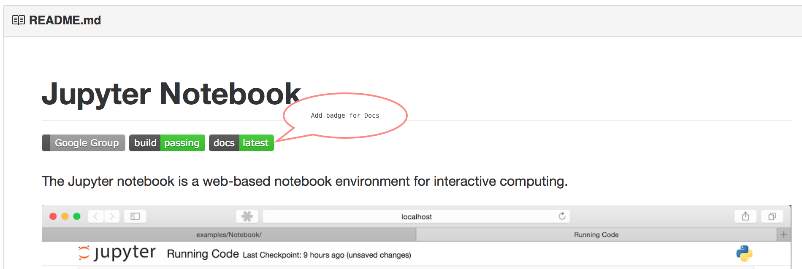
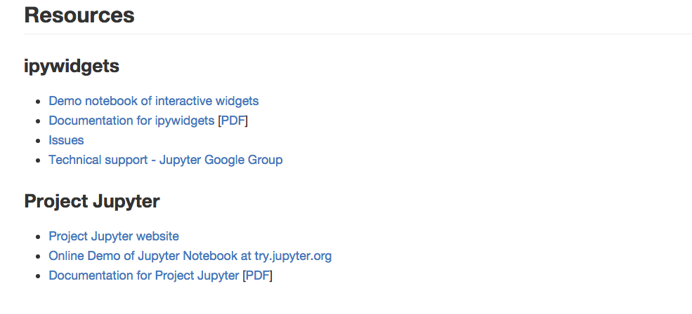

Providing users and developers consistency across repos is a valuable time saver and improves user productivity.
On a larger scope, having the Jupyter name appear prominently in a repo's
README.md file improves the project's name awareness.
One common way that individuals find documentation is to look for and click on the doc badge that commonly is found right after the title. Another benefit is an easy visual indication if the docs are not rendering properly.

A Resources section at the end of the README.md gives useful links and
information to users about the individual project and the larger Project
Jupyter organization. Make sure to include any links to the individual project's
demo notebooks, if available.
The Resources section includes:

README.md and submit pull request)README.md and submit pull request)Dated: 1-4-2016 Revised: 1-7-2016